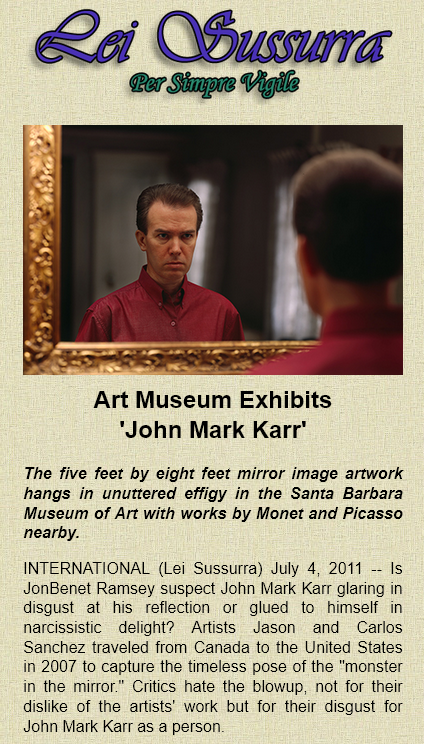
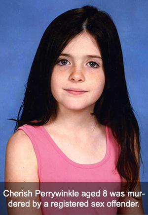
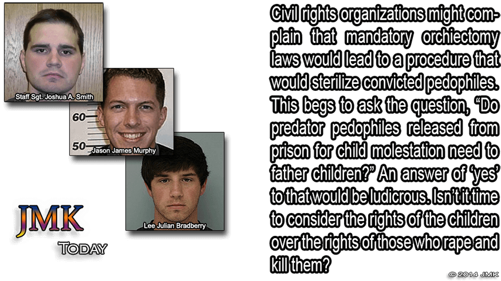
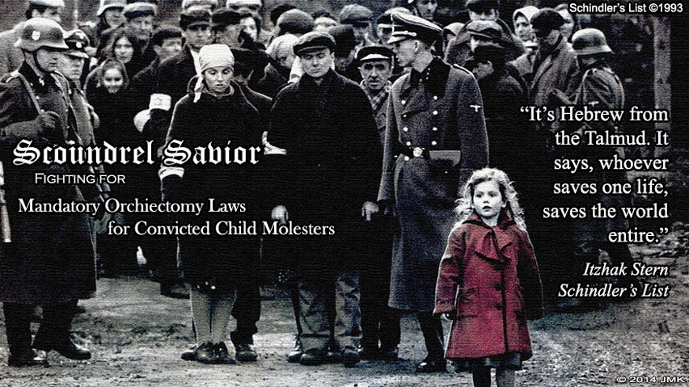

Statement Concerning My Exit From America in 2020
In early summer 2020, I sold my house in America and left the United States. It was never any secret that my house was on the market for sale last year. At one point, it was listed on the MLS. I owned the house for only two years and ten months. In 2017, after living for only weeks in the house, I was exposed to the media by people I had allowed in my home as guests. I was portrayed by the media and treated by the public as a dangerous threat to society though I had never been convicted of a crime. After the 2017 media exposure, some asked me why I returned to America in the first place. I returned to the US in 2017 because I had every right to do so. I returned to the US in 2017 and bought a house there because I had every right to live in my own home, in my own country, as a citizen of the United States with full blown constitutional rights that is afforded to every natural born citizen who has never been convicted of a crime. I had those rights but, while there, that did not prevent some Americans from violating them wholesale - walking by my house shouting "Murderer!", "Killer!", "Serial Killer" and "Child Rapist" mostly occurring in broad daylight as I worked to restore my historical home which remains an asset to the community long after I am gone. I also had the right to sell my house and leave the United States in peace and in privacy without the media exploiting the event and without the accusation that I was running from something. I guarded the sale of my home when it occurred last year not because I was sneaking around like some lowly criminal but because of my concerns that the media would exploit the sale of the house as they had exploited the purchase of it which would have compromised not only my privacy but the privacy of the new owner of the home. After discovering recently that certain persons planned on profiting from and exploiting the release of this information, I reluctantly decided to post this statement on my website almost seven months after the fact. I was never then nor am I now in any way obligated to inform you: my haters, my enemies, and to whom it may concern - but here it is nonetheless. January 13th 2021
Statement Concerning Kamala Harris 2020
In 2010, I was accused of everything from felony death threats to being a sex cult leader. Fox News reported that there was a warrant out for my arrest and that the police in San Francisco were looking for me. The media directed their attention to the San Francisco District Attorney's Office that released this statement in response: "At this point, there is no case to review for charging," says spokeswoman Erica Derryck." (Seattle Weekly). The San Francisco district attorney at that time was U.S. Vice President elect Kamala Harris who was not swayed by media pressure, false accusations, or public opinion and expeditiously closed down the rumor that her office had criminally charged me. November 7th 2020
Statement Concerning Madeleine McCann 2020
I have been approached for answers about the latest development in the case surrounding Madeleine McCann. The authorities are determined that any pedophile they can prove mere proximity to Madeleine is a prime suspect in this case and worse - a killer of a little girl. This time around, it is imprisoned pedophile, Christian Brückner. He has vowed that he will admit to nothing until authorities can provide proof that he is somehow connected to Madeleine McCann. In other words, he's said a sound "f**k you" to the law who wants to peg him. The truth is, they will not be able to show such proof. He's never met Madeleine because her disappearance had nothing to do with a pedophile imprisoned in Germany or anywhere else in the world. He would, however, make a wonderful fall guy who authorities would not hesitate to elect. Do you want the truth or a poor excuse for it provided to you by out of touch authorities trying to make a name for themselves? Madeleine McCann is alive and well and unaware of the swirl that surrounds her. June 15th 2020
Statement Concerning the 2016 DNA Probe
Boulder Police is asking the state to conduct a new round of DNA testing. It's pretty obvious why they should make such a request now. Last month, DNA experts uncovered that the DNA that let me walk in 2006 was a composite of several DNA samples in one. It was also uncovered that Lacy was fully aware that the tiny sample was a composite before she used it to "exonerate" the Ramsey's. The "little DNA that could" is slowly capitulating. A call to the state for a nice replacement has become a necessity for those who insist that this is a DNA case while experts for years have said it is not.
Lacy publicly humiliated me in front of the whole world with her accusation that I was a delusional liar because my DNA didn't match that random, drive-by DNA that established nothing and could never be used to pinpoint any one person, much less a killer. I must admit, I'm sad to see that little DNA sample go. It's been good to me over the years.
I've been asked if I'm worried about this latest DNA development. Of course, I've always had great concerns that my DNA was left behind; however, with the small time local authorities who are in charge of this case along with the corruption that has been proven over the years, I'm not as worried as I would be if it were a valid agency with proper resources, not influenced by wealth or fame or political gain. The day this case falls into the hands of the FBI will be the day I'll have something to worry about. December 15th 2016
Statement Concerning the Discovery ID Ramsey Television Special
The American public deserves to know that I gave six hours of quality interview time to Discovery in Bangkok on JonBenet's birthday. I revealed new information about JonBenet's death. You will never hear that. I dismantled the DNA. You will never hear that. I talked about how my DNA was taken in 2006 which was a total joke. You will never hear that. I responded to the ridiculous way Mary Lacy mishandled my arrest in 2006. My right to defend myself and tell my side of the story was dumped. Most importantly, I talked about a law that would save children's lives. This was also axed. I feel the American people have the right to know that they were robbed of all this and more by Discovery's decision to merely roll old 2006 footage and call me a lunatic liar. Six hours were reduced to a few sentences spread across three nights. Investigation Discovery used my image and name to promote their show for three nights making promises that, on the third night, there would be an exclusive interview with me. That never happened. Instead, Americans got the dog and pony show. I am receiving hundreds of visits from Americans looking for an answer. You didn't get those answers in the ID exploitation and public humiliation of John Mark Karr. September 16th 2016

Who is John Mark Karr?
Since nobody gives a damn about anything in my life but my criminal record, I'll focus solely on that here for all intents and purposes. It's a pity because I've certainly had many years of life experiences aside from that.
In 2006, I was arrested for the murder, kidnapping, and sex assault of six year old JonBenet Ramsey and extradited from Bangkok to Boulder Colorado. My arrest was based on my account of the night of her death that corroborated with physical evidence withheld from the public by the coroner and law enforcement from 1996 to 2006.
I was ultimately discounted as a lying, lunatic, attention seeking whore. How could a person who had been in hiding for five years and using a pseudonym with his informants manage to cash in on this fame? After all, I did not turn myself in. I didn’t phone CNN. I didn’t turn myself in when I was last in Boulder in 2000. I didn’t cash in on all that supposed fame for ten damned years but I was an attention seeking whore? If I became notorious, it was thrust upon me against my will by the media who showed up like a pack of hungry wolves. So I am to blame for something I didn’t do? Wouldn’t be the first time.
The prosecution finally said she didn’t bring me back on charges at all though strangely, I attended an extradition hearing in a packed, media covered Los Angeles California courtroom where a judge read off all five of the charges in Colorado and asked if I wanted to waive to extradition on those five charges. He read the charges individually. They included such terms as murder in the first degree, kidnapping, and sex assault. I assure you, Ms. Lacy, the charges were real.
I was last questioned by private detectives regarding the Ramsey case in 2009 with light contact from private detectives in 2014 but with no questions about the Ramsey case. As of December 2016, I am still being questioned by a past agent of the FBI about this case.
After my release from the Ramsey case charges in 2006, I was extradited from Colorado to California on 2001 charges of alleged possession of child pornography.

Rewind to the year 2001. I had just moved with my wife and three sons to California one year prior. I had worked in a prestigious school for girls in San Francisco and ultimately was working on my Masters of Elementary of Education degree, doing a teaching internship at a school in beautiful Napa Valley California. Every morning, I drove my classic Jaguar through famous vineyards to get to my little elementary school in paradise. One day, in the middle of a lesson with my fourth grade classroom, the principal came for me. Waiting in the office of the school were two Napa Valley detectives. My life would never be the same again. I would lose my wife and kids, my career, and my country in a matter of six months.
In Sonoma County, I was investigated for the murder of a twelve year old Santa Rosa girl named Georgia Moses. She was said to have had an intense sense of humor much like another twelve year old girl in the area, Polly Klaas. She was from Georgia. Oddly enough, as a young man working for my father, I rented an apartment in Atlanta to a large African American family by the last name Moses.
The girl’s remains were found a fifteen minute walk from my Petaluma home, wrapped in a piece of carpet and left on the shoulder of Highway 101. Of course, I lived in Petaluma years after her body was discovered; however, it was thought by authorities that I had returned to the scene of my own crime for nostalgic and sentimental reasons.
In 2018, a contact informed me that they had been interviewed by federal agents in 2006 primarily for my involvement in the murder of JonBenet Ramsey. The contact told me that the interview turned to my involvement in the abduction of 12 year old Polly Klaas from her Petaluma home in 1993 and that the conversations about Klaas had lasted over an hour.
In 1993, Richard Allen Davis was arrested after being identified on a wanted poster containing composite drawings based on the descriptions of other young girls who were in Polly Klaas's bedroom on the night of her abduction. Davis admitted to the abduction and ultimate murder of Polly Klaas, leading investigators to her remains. Davis was convicted for the kidnapping and murder of Polly Klaas. He is currently on death row at San Quentin Prison outside San Francisco.

Davis has always denied that he was a pedophile who had first raped her and then killed her. If this is true, the question would remain as to his motive for abducting Klaas. This might lead some to believe that Davis was hired to abduct Klaas and deliver her to another person or persons. Davis has never confessed to this scenario.
In 2006, authorities tried to prove that I had had a correspondence with Davis over the years. His prison cell at San Quentin was turned upside down as authorities searched it attempting to find any letters or other evidence that I had sent mail to him. Authorities were seeking to uncover the contents of the alleged correspondence between Davis and me. Davis was very displeased with all of this. Davis has expressed in interviews in and around that time that he wished I would be 'popped' which is prison jargon for 'shot in the head'.
Returning to 2001, I was ultimately arrested for alleged possession of child pornography. It might be interesting to note that the prosecution’s hired photographic, age analysis experts could not determine that persons in the five images were under their upper teens in age. If you’re conjuring up images of little six year old girls naked, think again. The images were shown to me by my attorney. They were so blurry, one was hard pressed to assume they were human. One of my attorneys said of one of the images, “is that a close up of a Bartlett pear?”
While locked up in semi-solitary confinement for six months with my only chance of release, a $100,000 bail, I was investigated by the FBI for the murders of unnamed little girls particularly in the states of California, Alabama and Georgia, according to Sonoma County prosecution and police records. At every court hearing for the six months I was in jail, the prosecution consistently brought up the status of the FBI’s investigation, saying to the judge that they were in constant contact with the FBI.
At the end of a grueling six months confinement, the prosecution stated to the judge that they had spoken to the FBI who informed them that their investigation of Karr was over. The prosecution then stated in the same court hearing that, at that point, they had no further interest in holding me incarcerated and accepted the terms of releasing me on my own recognizances.
After my release, I attended two court hearings. My defense presented to the judge that the computer in question was obtained without a search warrant further stating that, though there was a warrant for one of my California homes, there was not a search warrant of the other of my homes where the computer against me was retrieved. The judge instantly said that he thought law enforcement, in his words, ‘jumped the gun’ on retrieving this computer and should have gotten a legal search warrant. The case was almost dismissed until the prosecution spoke up that they needed a chance to tell the judge the intensity of the case - that this was much more serious and involved than just porn charges. The judge said ‘very well’ and the next hearing was scheduled a few weeks later. At the next hearing, the judge said that he had heard what the prosecution had to say and had decided that he would allow the evidence even though it had been found without a search warrant.
I was completely disillusioned with the legal system in Sonoma County. My constitutional rights were completely violated. I felt I would never get a fair trial in a place where evidence found without a search warrant was permitted. That, coupled with the fact that I was on the radar of the FBI for the first time in my life, prompted me to leave America once and for all.
On a rainy November night in 2001, I boarded a plane in San Francisco bound for London. I would remain out of America for five years until my 2006 arrest. My family thought me to be dead.
Return now to 2006 when I was returned to Sonoma County to once again face these charges. During the hearings, the prosecution said that there was a tape drive supposedly found in a box near my evidence therefore it had to be mine. Such logic reminded me of 2001 when a judge said search warrants were unimportant. The prosecution said there were 16,000 images of child porn on that tape drive. Of course this drive did not belong to me but my lawyers and I played along.

My lawyer came to me and said, “The prosecution showed me hundreds of the 16,000 porn images. Guess what the images are of? Little boys. All of them are little boys.” And I thought John Mark Karr was supposed to be a sick pedo attracted to little girls? This matter kind of fizzled out. I think the prosecution knew they were in above their heads trying to first prove the drive belonged to me and secondly prove that I would have interest in child pornography of little boys.
Much to my amazement, one day my lawyers came to me and said the media had leaked to them that the computers held in evidence against me had been lost by the sheriff’s department in a move from an old evidence room to a new one. It seems that there were thousands of pieces of evidence moved but mine was the only evidence lost. I was released from all charges based on lack of evidence.
In reality, the sheriff’s department lost evidence that was found on a hard drive discovered without a search warrant; consisted of five deleted images; was located on a broken hard drive never operated in the state of California; and contained images that the prosecution’s experts could not determine was child pornography.
My lawyers were disappointed that the case did not go to trial so they could bury this bogus case against me once and for all. My lawyers did not consider the dropped charges as a victory.
Returning to 2006, after my release in Sonoma County California, I moved to Atlanta. In the months that followed in the same year, I was investigated by the Department of Homeland Security for international child sex trafficking, international child molestation and international murder of children. I was harassed by a neighborhood civic organization that sent out 2,000 letters to residents warning them of the threat - John Mark Karr. I was treated like a sex offender. I was harassed by hordes of law enforcement who would show up with lights flashing even for the mere sitting on a park bench overlooking a golf course in the middle of the day. My life was a living hell. I would not be able to remain in America for long.

In 2007, I was arrested for the battery of my elderly father, Wex Karr. In reality, Wex Karr was holding me against my bedroom wall by the throat. I struggled to release his two very strong hands from my throat which might have possibly left marks on his arm. Brooke Dovgan was a witness to all this and reported it to the police that night.
Earlier that week, my father came into the house with a black eye and told Brooke Dovgan and me that he’d run into a tree limb. I’m sure police blamed his black eye on me as well.
Charges included the prevention of a 911 call. In reality, I merely requested that my father not call the police in reaction to an argument I was in at the time with my then girlfriend, Brooke Dovgan. I did not threaten him in any way. I pleaded with him not to create something major over something trivial. Wex Karr became very angry and threw his own phone down a hallway, hitting the walls and breaking his phone. When police arrived, I was blamed for the broken phone.
In the end, I was ordered to attend anger management classes by a judge after pleading no contest to the charges which, again, was a huge blunder on my part and based on flimsy advice from an attorney. I covered for Wex Karr for the mere fact that I had no place to go and nowhere to live. I look back on it now and wish I’d checked into a homeless shelter and let the world know what really happened to me. All charges were dropped against Wex Karr. Go figure. The charges against me were expunged, for the little that is worth.
In 2007, I was investigated by the FBI for the organization of a sex cult involving teenage girls. A computer was confiscated out of state - not one of my own and not from any of my past residences. The case fizzled out due to lack of evidence. Little did I know, the sex cult investigation would rear its ugly head yet again in 2010.

It was in that same year that Seung Cho murdered 33 students at Virginia Tech. In his final manifesto, thought to be written during the killings, Cho mentioned me on page 16 stating, "You wanna rape us, John Mark Karr's? Fuck you!" My heart was broken when I heard about this. My fears were confirmed that mass murderers like Cho had me on their minds. I was reminded how very dangerous it was for me to remain in the U.S.
Some have even scoffed at my fearful reaction to Cho's statement in his final manifesto saying, "But Cho is dead now and can't hurt you." A grim reminder of Cho's manifesto resurfaced on August 26, 2015 when WDBJ-TV reporter Alison Parker and cameraman Adam Ward were shot to death during a live interview in Moneta, Virginia by a past fellow journalist, Vester Lee Flanagan aka Bryce Williams. Flanagan also wrote a final manifesto and in it he said: "Also, I was influenced by Seung-Hui Cho. That's my boy right there. He got NEARLY double the amount that Eric Harris and Dylan Klebold got…just sayin'."
My desire to once again have some semblance of privacy and protection reached a point of desperation in 2008 when the name John Mark Karr was legally changed to Alexis Valoran Reich. The attempt was futile. In 2010, the name was sold to the tabloids in an exclusive interview in the National Enquirer with Brooke Dovgan. The person accused of wanting attention was exposed against his will once more. The name was turned into a dot com and served as a tracking device. The John Mark Karr entry at Wikipedia was vacated and changed to Alexis Valoran Reich for the same purposes. Wikipedia has since removed all main entries for either name.
I was accused by my enemies of changing my sex to get a better chance of getting closer to little girls. What a load of shit that was. For years, I had worked with thousands of little girls as John Mark Karr the man. How many transgender elementary school teachers work at your children's school? How many transgender nannies are there in England? Such a transition would have buried all chances of me getting a job working with little girls. I was merely trying to survive. My enemies made certain my hell would be perpetual.
I did not come out to the world as a transgender. I was instead and once again tossed to the media wolves to be devoured. There was no front cover of Vanity Fair. There was no media talking about how beautiful I was. There was no public outpouring of understanding and desire to learn more about crossing over to another gender for me. The American media was vicious. I was mocked. I was ridiculed. I was publicly crucified.
In the same 2010 year, I was investigated by the San Francisco Police Department and other branches of law enforcement for the alleged organization and leadership of a murderous cult alleged to abduct little girls for sex. I was accused of threatening the life of a nineteen year old Samantha Spiegel for her exposure of the activities of the alleged sex cult. Spiegel claimed to be one of my past students though she was in a totally different grade from the one I worked with in San Francisco. She told one lie after another about me from saying that I led a cult of JonBenet Ramsey look alike little girls to saying that I asked her to walk the streets of San Francisco at night seeking little girls to abduct for my sexual pleasure. The media gave her center stage to dismantle me as a human being. Read more in Lei Sussurra's article, Samantha Spiegel's Macabre Collection of Killers.
Fox News reported that there was a criminal warrant out for my arrest. Believing this ‘news’, I flew from Paris to America to face up to these charges. There never was a warrant. The DA's office in San Francisco made an official statement that they never had plans to issue a warrant out for my arrest. Instead, I was served with a restraining order. I returned to Paris in a week’s time of arriving back in America. My regrets for returning to America at all are numerous. I took risks and I suffered for the week and a half I was there. Thank God, I'm not there now.
Most of the events of 2010 revolved around the actions of a vigilante hate group that attempted to derail my life based on their lowly opinion of me and not on any evidence that I was a monster let loose on the world's children. They bought and set up websites using the names John Mark Karr and Alexis Valoran Reich that distributed Karr hate propaganda designed to trace and track me - to rank high in the Google searches for both names to tip off anyone that I was a monster who should be turned over to authorities. These crusaders to protect children from horrible monster John Mark Karr were based in America and consisted of friends, past girlfriends, and even family members. Read more in Circle of Fire's article, Anti-Karr Group.
The events of 2010 made me homeless for over two straight years. I lived a very uncomfortable and dangerous existence.
Oh, by the way, I have never been convicted of a crime. I have never been a registered sex offender.
Needless to say, I have lived outside North America since 2008. My life continues to be plagued by the threat of homelessness and outright danger. I am still sometimes recognized, no matter how remote my location, by 'angry admirers' who mostly shout at me. I would have written all this in a book that might have given me a few meals to eat and a place to live for a few nights but I've been banned by the publishing world from ever having anything published as many believe I must be silenced or, moreover, that I should not exist at all. As long as I have this dot com, I will say plenty.
Mandatory Orchiectomy Law for Convicted Child Rapists
While children cry out Salvame! - convicted rapists are given short sentences and placed on a list. Nisi una solutio! There is only one solution - mandatory orchiectomy for convicted child rapists. I'm John Mark Karr and I propose a law that would make mandatory orchiectomy (castration) plus 5 years confinement without the possibility of parole, a law applicable to all males convicted of sex crimes against children. The law in action is as follows:
1. Those convicted of sex crimes against children would be subject to mandatory orchiectomy that would be carried out in optimal clinical settings followed by quality post op care.
2. The convicted would remain incarcerated for a period no less than five years without the possibility of parole. This would allow all post chemical and psychological effects of the hormone testosterone to leave the body. The five years without the possibility of parole would run concurrent with the existing sentence received and would never be considered a replacement for any existing sentence imposed as the result of a child rape conviction. It would ensure that no person could walk earlier than five years as some sentences currently do allow.
3. After release, the convicted would be subject to frequent testing for testosterone in the system to detect any possible intake of synthetic testosterone. The testing would remain in place for life.
Orchiectomy has an intense outcome as it eliminates high levels of testosterone that certain individuals react to negatively resulting in an uncontrollable sex drive. An overwhelming sex drive leads to deviant sex fantasies that, when uncontrolled, leads to deviant sex acts.
Sex crimes are committed by sex driven individuals. The core of the problem can be eliminated with orchiectomy and a time span afterward that allows the psychological to catch up with the intense physical transformation as the result of the elimination of testosterone.
I have personally experienced a life change that has made me feel the nagging necessity to share for the sake of all the children who will certainly fall victim to rape and murder. After years of grappling with this demon, I have concluded that the whole answer does not lie in the psychological. Instead, the largest portion lies in the physical. The mind is controlled by what the body produces and in this case, it's testosterone. It is a vicious cycle that can never be controlled unless there is physical intervention.
In 2006, I had this operation. Over the years, it has changed my life. Quite simply, my sex drive no longer exists; therefore, sex thoughts and fantasies don't exist which are the driving forces behind an eventual sex act in real life. Behaviors can be modified as the result of physiological factors that can be altered to control outward manifestations that might save the lives of countless children from being molested and murdered. This world dilemma doesn’t need a diagnosis. It needs a working and practical solution.
So much is in place to punish convicted pedophiles but what successful preventative measures have been taken? Let's face it. Prison sentences for these offenders are too short. Longer sentence won't cure their perversion anyway. Everyone feels so wonderful when a convicted child molester "gets his" but how does punishment change this man? Is he afraid to commit the crime again just because he's been placed on a list? Statistics say that the most repeatable offense is child molestation. This proves there has to be more than punishment. Punishment focuses on the pedophile. Prevention focuses on the child. Prevention must prevail if children are to be saved.
Even therapists say therapy can't help child molesters. That's because therapy can't take away a child molester's sex drive. It is their sex drive that is the ingredient in the mix that makes it boil and causes these people to go off the deep end with a child.
Then there's the good ole fashioned pedo hating talk I've heard all my life. "Let's just take them out and kill them," they say. OK. Let's kill them. After all, that would be a permanent solution. Sounds good but it's never going to take place. The fact is, it is rare that child molesters have been killed. That means they're still out there molesting children while you're sitting there shouting, "Let's kill pedos!" "They need to be put away in prison for life," others say. Never in my lifetime do I think child molesters are going to get life in prison for their crime. You can talk that talk all you want but the reality of it is that somewhere in the world, a child molester is getting out of prison after a few short years as you are reading this. Talk is cheap. Our children are worth more than a bunch of ridiculous rants that do nothing to stop kids from being raped and killed.
But you might say, we have a comprehensive sex offender registry that takes care of those child rapists. The sex offender registry reminds me of that Santa song, "He's making a list and checking it twice. He's gonna find out who's naughty or nice." Do you actually think a highly sex driven child molester with a drive so powerful would let something like a name on a sex offender list stop him from feeding his insatiable sexual desire to rape a child? Desperate actions belong to desperate people and desperate people don't give a damn about a list with their name on it. Most of these people have been in an out of some of the toughest prisons in the country. They're mean and bitter but mostly, they're driven by their desire to do a sex act with a kid. These are not people easily scared by someone maintaining their name and information on a list. At this time, the only safeguard against newly released convicted pedophiles is the national sex offender registry. With that said, God help the children.
The list has some advantages. The public has a current photo of the offender; knows where they live; the year and make of their vehicle and its license plate number; and the age and gender of their victim - that is, if you look up their entry. Offenders on the registry won't be allowed to work with children as the result of a background check that reveals their name on the list, but do all or most molestations happen at school? Of course not. I can't recall a single child murder that has occurred in an elementary school. That leaves the rest of your child's life outside school at risk. In other words, your kid is safe at school but not in every other place, and that's a lot of other places.
Fliers are sent out that a sex offender lives in your community or, in my case, fliers go out even if you're not on the registry and it gets even more press. So now neighbors are armed with the information they need and information is power - or is it? You might be able to do such things as drive by that guy's house a couple of times a week. Maybe you can see him in the grocery store and pull your kid close, but how many kids get molested in the grocery store? The public doesn't know what the offender will do in the dead of night. The public knows where they live and what they drive but can't watch them every minute.
A testament to the failure of the the current system in America was revealed in 2013. I'm certain there have been others but this is one that made it in the news. A Jacksonville Florida man, Donald Smith, was released from prison and placed on the sex offender registry. In a matter of days, he would meet his next victim.
Cherish Perrywinkle wasn't from a rich family. As a matter of fact her family struggled financially. It was evident that Cherish didn't wear expensive clothes. It was just that that Donald Smith played on to gain the trust of Cherish's mother.
Smith the charmer wasted no time getting close to his next victim. He struck up a conversation with Cherish's mom and suggested eventually that he would like to buy her little girl some new clothes at Wal-Mart. The appreciative mom commenced her shopping spree for her daughter's clothes. She was carried away with the kind hearted man who was extending his generosity to her little girl. If she could afford to purchase all these new clothes for her daughter herself, she wouldn't have dreamed of allowing a stranger she'd just met to buy clothes for her little girl. This gesture of generosity from this kind stranger was just too tempting for this financially poor mom to pass up.
Smith went a step further and offered to buy lunch at a fast food restaurant in the front of the Wal-Mart store. He told the mom to keep on shopping - that he and Cherish could order the food and wait for her there in a few minutes. Cherish's mom watched the two walk away. "See you in a few minutes mom!" Cherish was so happy and excited about the clothes and the delicious lunch that awaited. Cherish's mom would never see her daughter alive again. Instead of taking Cherish for food, Smith took her to his van, drove her to a church parking lot, and killed her.

Some might say that there is no way to know for certain that his actions had anything to do with his sex drive. I contend that Smith's fantasies of murder and cannibalism of little girls were indeed driven by sex. In adults, it is accepted that sado-masochistic acts are definitely connected to and driven by sex. I know that if Donald Smith had been subjected to mandatory orchiectomy and his raging sex drive had been taken completely away as a result, he wouldn't have had the drive to seek out a little girl and do God knows what to her in a van and then kill her. If he had undergone orchiectomy surgery and was detained for five years afterward without the possibility of parole, then it could be said that ALL was done to prevent this child from being taken from her mother forever. But all was not done and eight year old Cherish Perrywinkle suffered an awful and agonizing death as the result of a broken system. Smith is living proof that a desperate predator pedophile could care less if he's on a sex offender registry. No entry on a sex offender list can stop a man like Smith when he makes up his mind he will have a little girl.
It's not just pedophiles who are driven to crimes because of their out of control sex drives. Ted Bundy tried to leave a piece of information behind that explained why he raped and killed his many victims. He said pornography made him do it. He was partially right but he did not understand that it was his sex drive out of control that made him consume the pornography in the first place. Even serial killers like Jeffrey Dahmer spoke of his insatiable sex drive during his interviews.
Psychologists have said that pedophiles can never change - that no amount of therapy will help them. They're right about that. But pedophiles can change after orchiectomy surgery. After a period of time, the twisted sex fantasies will subside until they are completely gone. More importantly, that which drove them to destroy children will be gone. Their motives and the tangled plans they plotted in their sexually euphoric state of madness will be vanquished. And then and only then might therapy help these people.
Still think testosterone is just a joke and can't have any effect on the psychological? Consider the power of this hormone as it takes effect during puberty in boys. It is a chemical so strong, it changes bone shape in the face and body; causes hair to grow on the face and body; changes the pitch of the voice; causes male sex organs to grow larger; promotes muscle mass; and causes a grown man to lose the hair on top of his head. If cocaine did any one of those things, it would scare the hell out of using it ever again. No drug or substance can cause such metabolic changes as does testosterone. And in the midst of all those changes during puberty, what kind of sexual thoughts and fantasies are some boys having as the result of the ever underestimated testosterone?
So why aren't all males who have testosterone in their system not out raping children? Everyone is effected differently by every stimulus or chemical. Some people can hold their liquor while others are driven to crimes under the influence. Some women commit crimes during their monthly menses while others never would. It's no different from how the effects of testosterone cause some to molest children and does not cause this in others. We all react differently to hormones and other chemicals.
Why five years without parole after orchiectomy for convicted pedophiles? Quite simply, hormones are slow moving in their effects on the mind and body. No person goes through puberty over night. It takes a few years for someone to completely go through puberty. Nor does anyone lose all the hair on their head as the result of dihydrotestosterone, overnight. The effects of testosterone takes several years to zap most of the hair on top of a man's head. The same goes for reversing the effects of testosterone, especially on the psychological. Attraction to little girls becomes ingrained in a person over a period of many years. You can't expect a way of life to just vanish overnight after orchiectomy. It takes several years for the psychological to catch up with the physical effects of testosterone. Hormones are not overnight in any situation. It is an evolving process. But after several years, a boy becomes a man as the results of testosterone. And after several years, a man becomes bald as the result of dihydrotestosterone in the system. Just the same, after several years, are the psychological changes as a result of the lack of presence of testosterone that was in a man's system for a lifetime. Now the cause has been removed. The body and mind has no choice but to follow. Sex drive and its byproducts have lost their fuel. Sex fantasies and the acting out of sex fantasies have nothing to work with anymore.
I have a priority - an agenda that is stronger than any self-serving plan. I’m not trying to get the world to see me as a good and wonderful person. That wouldn’t be possible for me – a person despised and hated for being thought to be one and the same as the ones I’m trying to combat. If I’m thought still to be the predator, think of the information I have that could save the prey.
Pedophilia can be killed; therefore, child rape can be eradicated. In the case of dangerous child molesters, sex kills and will continue to kill until the catalyst, testosterone, is removed from their physical equation.
Copyright 2022 All rights reserved